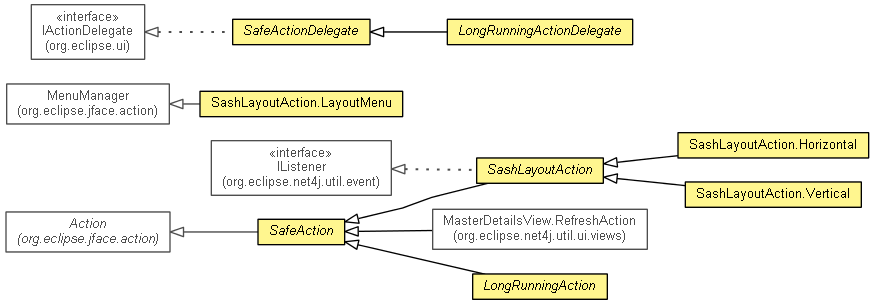

JavaScript is disabled on your browser.
Overview
Package
Class
Use
Deprecated
Index
Help
Prev Package
Next Package
Frames
No Frames
All Classes
Package org.eclipse.net4j.util.ui.actions
Reusable actions and action delegates.
See:
Description

Class Summary
Class
Description
LongRunningAction
LongRunningActionDelegate
SafeAction
SafeActionDelegate
SashLayoutAction
SashLayoutAction.Horizontal
SashLayoutAction.LayoutMenu
SashLayoutAction.Vertical
SelectionListenerAction
<T>
Package org.eclipse.net4j.util.ui.actions Description
Reusable actions and action delegates.
Overview
Package
Class
Use
Deprecated
Index
Help
Prev Package
Next Package
Frames
No Frames
All Classes
Copyright (c) 2011, 2012 Eike Stepper (Berlin, Germany) and others.